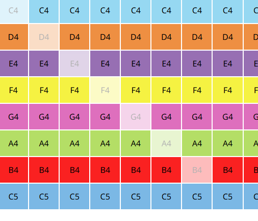

Música
Nesta seção, vamos aprender a utilizar a aba Música da plataforma para compor melodias personalizadas de forma visual, por meio de um piano roll interativo. Essas melodias podem ser testadas e posteriormente utilizadas em blocos com o buzzer.
A interface possui diversos controles úteis:
- Lixeira: limpa toda a melodia atual.
- Salvar melodia: salva a melodia atual, que ficará disponível no bloco “Reproduzir buzzer com melodia”.
- Play: executa a melodia criada para escutá-la diretamente na plataforma.
- Pausa: pausa a reprodução da melodia.
- BPM: define a velocidade da melodia. O padrão é 120, mas você pode ajustar conforme necessário.
- Baixar: exporta a melodia como arquivo
.json. - Importar: permite carregar um arquivo
.jsoncom uma melodia salva anteriormente.
O piano roll funciona da seguinte forma: as colunas representam o tempo, e as linhas representam notas musicais. Você pode selecionar uma nota por coluna. Se pular uma coluna, aquele instante de tempo será um silêncio.
Exemplo: Criando a melodia "Do-Re-Mi-Fa-Sol-La-Si"
Vamos criar uma melodia simples usando as notas musicais básicas.
Depois de configurar a sequência da melodia, clique em Play para ouvi-la. Você verá uma linha vermelha se deslocando da esquerda para a direita, indicando o progresso da execução.
Se estiver satisfeito com o resultado, clique em Salvar melodia e digite um nome (como do-re-mi) na janela que será exibida.
Você pode continuar editando a melodia ou adicionar novos trechos depois. Também é possível exportar a melodia usando o botão de Exportar, gerando um arquivo .json que pode ser compartilhado ou salvo. Use Importar para abrir uma melodia existente.
Tocando a melodia com o buzzer
Após salvar a melodia, acesse a aba Blocos. Em Saídas e Atuadores → Campainha (Buzzer), selecione o bloco Reproduzir buzzer no pino. Nele, você pode escolher a melodia salva para reprodução.
No exemplo acima, usamos o pino D4 / BUZZER, pois o buzzer já está integrado à placa Amado Board nesse pino. Contudo, é possível utilizar buzzers externos em outros pinos, bastando selecionar o pino correspondente no bloco.
Após conectar o bloco no programa e clicar em Play, o buzzer executará a melodia criada. Você pode compor melodias mais longas e usar vários blocos em sequência para tocar trechos diferentes ou organizar a execução de partes da música.
Dicas adicionais
Se você clicar com o botão direito do mouse sobre o bloco de melodia, verá opções úteis como Excluir ou Exportar aquela melodia individualmente.